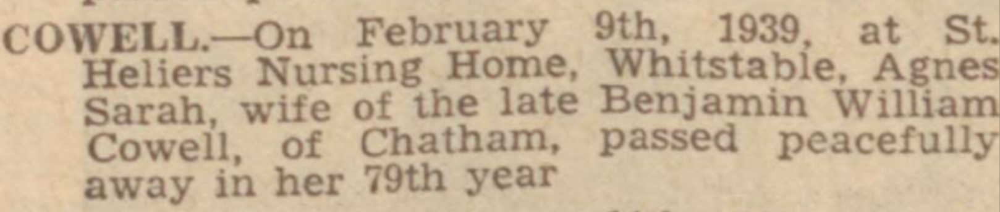
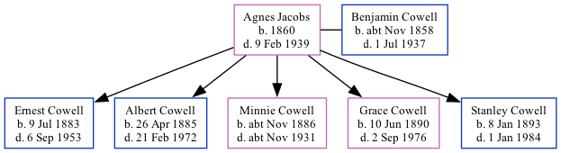

Agnes Sarah Cowell (née Jacobs) 1860 - 1939
[ Home ] | [ Calendar ] | [ Surnames Index ] | [ Family History ]Agnes Jacobs, the wife of Benjamin William Cowell (the second cousin three-times-removed on the mother's side of Nigel Horne), was born in Ventnor, Isle Of Wight, England in 18601 and married Benjamin (a woolen warehouse foreman with whom she had 5 children: Ernest Benjamin, Albert William, Minnie Gertrude, Grace Edith and Stanley George) in Medway, Kent, England around May 18812.
Throughout her life, she lived at 5 Hope Street, Chatham, Kent on Apr 5, 18913 and on Mar 31, 19011; and on 157 Glencoe Road, Chatham, Kent on Apr 2, 19114 and on Jun 19, 19215.
She died on Feb 9, 1939 at St Heliers Nursing Home, Whitstable, Kent.
Children
- Ernest Benjamin was born on Jul 9, 1883
- Albert William was born on Apr 26, 1885
- Minnie Gertrude was born c. Nov 1886
- Grace Edith was born on Jun 10, 1890
- Stanley George was born on Jan 8, 1893
Citations
- 1901 England, Wales & Scotland Census - Findmypast (was age 40 and the wife of the head of the household)
- England & Wales marriages 1837-2008 - Findmypast
- 1891 England, Wales & Scotland Census - Findmypast (was age 30 and the wife of the head of the household)
- 1911 Census for England & Wales - Findmypast (was age 50 and the wife of the head of the household)
- 1921 Census Of England & Wales - Findmypast (was age 61 and the wife of the head of the household)
Media
Chatham News 17 Feb 1939

1911 Census for England & Wales - GBC/1911/RG14/03922/0599/2
1901 England, Wales & Scotland Census Image - GBC-1901-0727-0728-0453
1891 England, Wales & Scotland Census - GBC/1891/0005444122
England & Wales marriages 1837-2008 - BMD/M/1881/2/AZ/000148/320
Family Tree
Generated by Ged2Site. Last updated on Jul 20, 2025